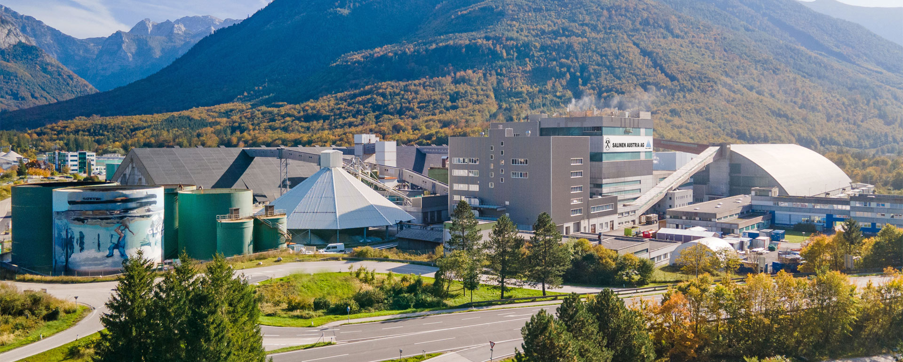
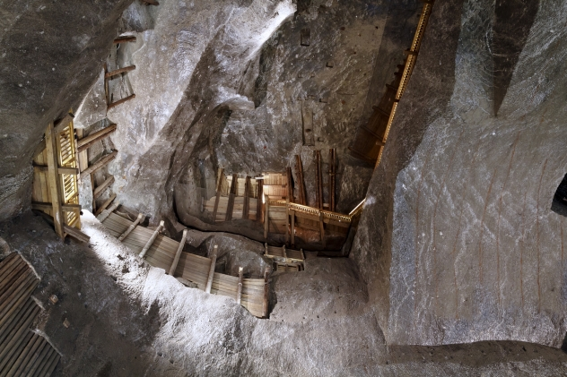
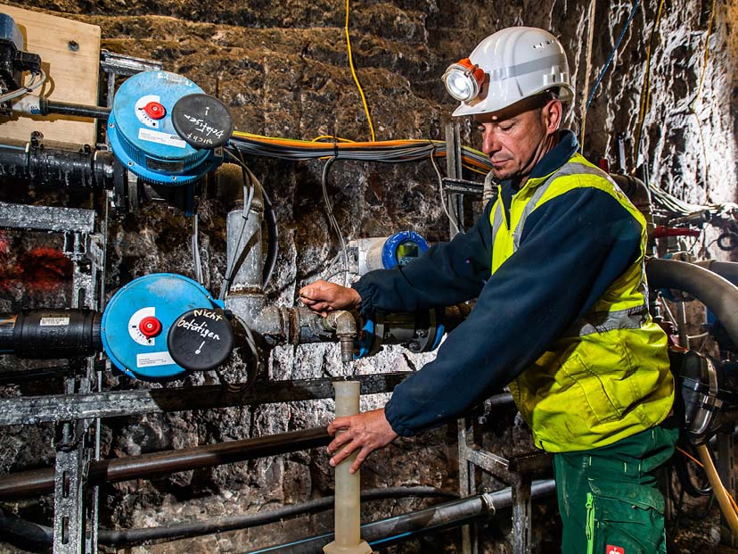

What is solution mining?
Solution mining is how we get at minerals that sit too deep underground to dig up the normal way. The idea is straightforward: pump a liquid solvent down into the deposit, let it dissolve the target mineral, then pump the mineral laden solution back to the surface. That returning fluid, often called "pregnant" solution in the industry, goes to a processing plant where the dissolved mineral is separated out and the cleaned solvent gets recycled back underground. [2]
The method works best with minerals that dissolve readily in water or mild chemical solutions. Rock salt is the textbook example. You send fresh water down a borehole, the water dissolves the mineral to create a saturated brine solution. This concentrated fluid is subsequently extracted and returned to the surface for processing. No tunnels, no underground crews, no blasting. The mountain stays intact. [6]
This technique goes by several names depending on the region and mineral involved. You will hear "in situ leaching" for metals like uranium and copper, "brine extraction" for salt, and "wet mining" in the Austrian Alps. The underlying physics is the same in every case: dissolve, pump, process, repeat.
Minerals extracted by solution mining
Not every mineral lends itself to this approach. The deposit has to be soluble in something practical, and the geology has to cooperate. Here are the main ones:
| Mineral | Common solvent (lixiviant) |
|---|---|
| Halite (rock salt) | Fresh water |
| Potash | Fresh water or heated weak brine |
| Trona / Nahcolite | Hot water |
| Boron minerals | Water or weak hydrochloric acid |
| Uranium (silica host) | Sulfuric acid + oxidant |
| Copper (oxide ores) | Weak sulfuric acid |
| Gold (experimental) | Cyanide solutions |
Technical process (Physical Model)
The simulation below shows a simplified version of the borehole probe method used in salt extraction. Fresh water is pumped from a surface tank through an injection well into the salt deposit. The water dissolves the salt, becoming saturated brine, which is then pumped back to the surface through a production well. An 18V motor drives the injection pump, simulating the high speed water injection used in actual field operations.
Solution mining: benefits & challenges
Key Advantages
| Low Surface Impact: No massive open pits or tailings dams. |
| Safety: No underground crews; eliminates cave-in risks. |
| Cost-Effective: Lower machinery and labor requirements. |
| Deep Deposits: Accesses minerals unreachable by shafts. |
| Cavern Value: Voids can store natural gas or hydrogen. |
Main Challenges & Risks
| Groundwater: Risk of fluid leaks into aquifers. |
| Subsidence: Potential for ground sink or collapse. |
| Selectivity: Only works for soluble minerals. |
Case study: salt mining in Austria

Austria has been mining salt for about 7,000 years. [5] The Salzkammergut region, which literally translates to "salt estate," grew wealthy on the stuff long before anyone thought to write the history down. Today the country still produces around 1.2 million tonnes of high purity evaporated salt each year, almost entirely through solution mining. One company, Salinen Austria AG, handles the entire operation. [1]
Austrian production process
Surface preparation
Fresh water is stored in surface tanks. The injection pump pressurizes the water and the mixing station blends it with any recycled brine at controlled ratios before sending it underground. [2]
Down the injection well
Pressurized water is pumped down the injection well, through the overburden and confining layers, and into the salt formation below. The borehole can reach depths of 400 metres in Austrian operations. [6]
Dissolution zone
Water contacts the salt body and begins dissolving it. The cavern expands gradually as salt is removed. Saturated brine (about 26% NaCl) sinks to the bottom and migrates toward the recovery well. [3]
Up the recovery well
Submersible pumps draw the heavy saturated brine back up through the production well to the surface. Flow rates are monitored to track how much salt has been extracted. [7]
Processing and recycling
At the surface facility, the brine goes through the Schweizerhalle purification process to remove calcium and magnesium. Vacuum evaporation crystallizes the salt to 99.9% purity. Cleaned water is recycled back into the injection loop. [1]
Environmental management
The switch from dry mining to solution mining happened partly for safety and partly for environmental reasons. Subsidence is monitored continuously to prevent cavern collapse. Excessive saltwater release into local waterways is tightly controlled because it can cause permanent layering (ectogenic meromixis) in nearby lakes like Lake Hallstatt. [4]
Salinen Austria AG compresses processing residues such as magnesium hydroxide and limestone, then pumps them back into abandoned caverns. This maintains geological stability and keeps the waste out of surface environments. [11]
Hydrogen storage research
Depleted salt caverns are being studied for underground hydrogen storage (UHS). Salt caverns are attractive for this purpose because they are impermeable and chemically inert. Austria aims for 1 GW of electrolysis capacity by 2030, and existing Salzkammergut caverns are being assessed for conversion from natural gas storage to pure hydrogen storage. [8] Research at Montanuniversität Leoben focuses on the self healing property of salt (viscoplastic creep), which lets these underground voids remain structurally sound over decades. [9]
Mining economics
The economics of solution mining and conventional room and pillar mining are fundamentally different businesses. One is capital light but energy heavy. The other is capital heavy but energy cheap. Knowing when each method makes sense comes down to geology, depth, available workforce, and local energy prices.
Real world comparison
Compass Minerals, Goderich Mine (Ontario)

The largest underground salt mine in the world, 1,800 feet beneath Lake Huron. Uses room and pillar method with continuous mining machines cutting through pure rock salt veins. It operates like a subterranean city with heavy machinery, explosives, conveyor belts, and a large underground workforce.
Salinen Austria (Austrian Alps)

Salt mixed with clay, mud, and gypsum in the Haselgebirge formation. Dry mining would bring up mostly dirt. Instead, fresh water is pumped down through boreholes. Water dissolves only the salt, leaving the rock matrix underground. The heavy brine comes back to the surface and goes through vacuum evaporation to produce pure salt crystals.
CAPEX vs OPEX
Capital expenditure: Dry mining has a massive upfront cost. Sinking a reinforced shaft, installing ventilation and hoisting systems, buying tunneling equipment: hundreds of millions of dollars, years before any product ships. Solution mining skips the underground infrastructure. Drilling wells and laying pipeline is far cheaper. But you need an advanced surface processing plant with thermal evaporators and centrifuges, so the CAPEX burden shifts rather than disappears.
Operating expenditure: Dry mining costs are dominated by labor, safety protocols, and machinery maintenance. Energy cost per tonne is low because you are physically breaking and moving rock. Solution mining is the opposite: almost zero underground labor, minimal maintenance, but enormous thermal energy costs. Boiling off millions of gallons of water to crystallize salt requires a lot of natural gas or electricity. Profitability of a solution mine is directly tied to local energy pricing.
Product margins
This is the real differentiator. Dry mining produces rock salt at roughly 95% purity. It is a bulk commodity sold for road de icing and basic industrial use. High volume, low margin. Solution mining produces vacuum salt at 99.9% purity. That commands premium pricing for food grade table salt, pharmaceutical grade salt for medical IVs, and high purity chemical feedstocks.
Formula comparison
| Parameter | Solution mining | Room & pillar |
|---|---|---|
| Core extraction | \(m = \rho \times V \times C\) \(V = Q_{in} \times t \times E_{dissolution}\) |
\(e = 1 - \frac{w_p \cdot l_p}{(w_p + w_r)(l_p + w_r)}\) \(\sigma_p = \frac{\sigma_v}{1 - e}\) |
| Production rate (P) | \(P = Q \times C\) | \(P = A_e \times h \times \rho \times E_f\) |
| CAPEX | \(C_{drill} + C_{pump} + C_{surface} + C_{pipeline}\) | \(C_{dev} + C_{equip} + C_{vent} + C_{convey} + C_{surface}\) |
| OPEX | \(Power + Water + Labor + Maintenance\) | \(Labor + Consumables + Power + Maintenance\) |
| Revenue | \(Production \times MarketPrice\) | \(Production \times Grade \times Recovery \times MarketPrice\) |
| NPV | \(NPV = \sum_{t=1}^{n} \frac{CashFlow_t}{(1+r)^t} - CAPEX\) | |